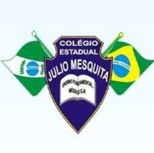
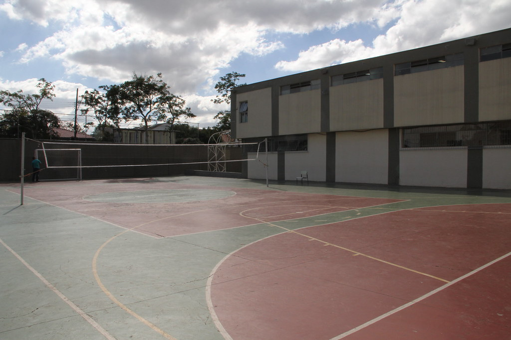
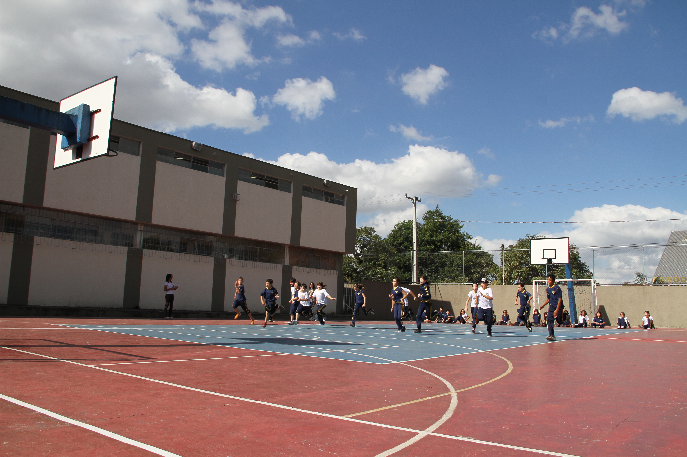
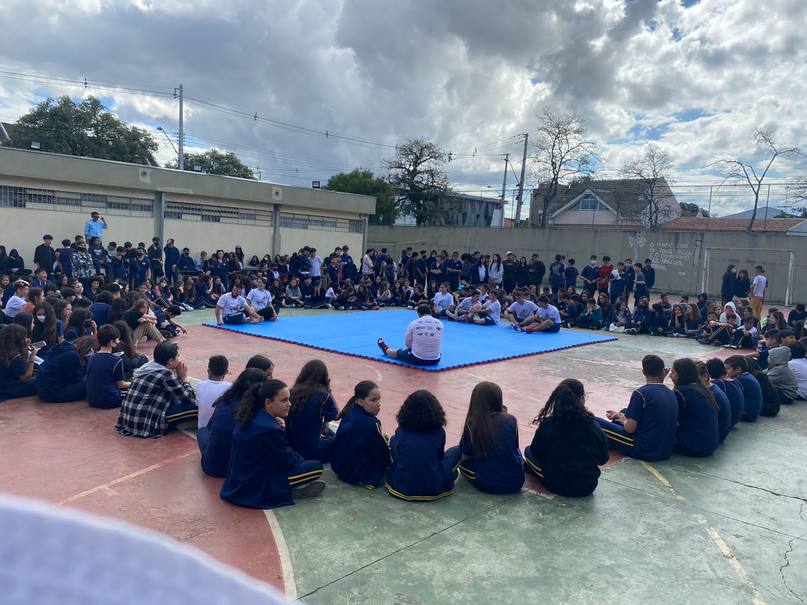
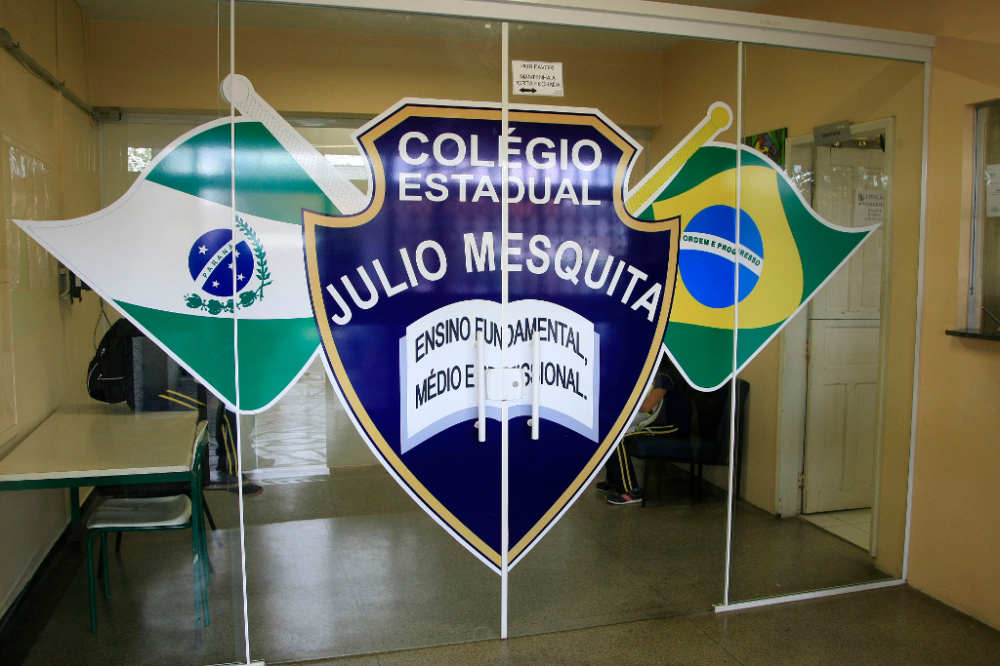

Colégio Cívico Militar do Paraná Professor Júlio Mesquita

O Colégio Cívico Militar Professor Júlio Mesquita é uma instituição de ensino pública localizada em Curitiba no estado do Paraná. Ele se dedica a oferecer educação de qualidade para seus alunos, abrangendo desde o ensino fundamental 2 até o médio.
Sobre Nós
História
Fundação: O colégio foi criado em um contexto de reformulação educacional e, em 1974, passou a se chamar "Escola Estadual Professor Júlio Mesquita" em conformidade com a Lei nº5692/71.
Evolução:Desde sua fundação, a escola se destacou por oferecer educação de qualidade, incluindo ensino fundamental e médio, além de cursos técnicos integrados.
Importância
O colégio tem um papel significativo na comunidade, proporcionando educação acessível e contribuindo para a formação de cidadãos críticos e preparados para o mercado de trabalho.

Missão e Visão
Missão
A missão do Colégio Cívico Militar Professor Júlio Mesquita é promover uma educação pública de qualidade, inclusiva e transformadora, que contribua para o pleno desenvolvimento dos estudantes como cidadãos críticos, autônomos e conscientes de seu papel na sociedade. Busca-se oferecer um ambiente de aprendizado estimulante, com formação sólida e oportunidades para o desenvolvimento integral dos alunos.
Visão
A visão do colégio é ser reconhecido como um centro de excelência educacional, referência em Curitiba e no Paraná, por sua capacidade de formar indivíduos preparados para os desafios do século XXI, capazes de contribuir ativamente para o progresso social e tecnológico, e que se destaquem por seus valores éticos e humanísticos.

Eventos e Conquistas
Eventos
Programas de Iniciação Científica: O colégio tem promovido projetos de pesquisa e iniciação científica, incentivando os alunos a desenvolverem habilidades investigativas e criativas. Atividades Culturais e Artísticas: O Júlio Mesquita realiza eventos culturais, como feiras de ciências, apresentações teatrais e exposições artísticas, que enriquecem a formação integral dos alunos.
Conquitas
Excelência Acadêmica: O colégio frequentemente se destaca em rankings de desempenho escolar, com alunos obtendo boas notas em exames como o ENEM.
Esportes: A escola também valoriza a prática esportiva, participando de competições e promovendo atividades físicas para o desenvolvimento da saúde e trabalho em equipe.
Iniciativas de Inclusão: O colégio tem se esforçado para implementar políticas de inclusão e diversidade, criando um ambiente acolhedor para todos os alunos.

Mais informações e para contato
Endereço
Rua Maria Theodora de Paula Costa, 49-Jardim das Américas, Curitiba-PR, 81530-270
Número para contato
Fixo:(41)32666405
Celular:(41)98744-0653
Séries
6°Ano do Fundamental até o 3°Ano do Ensino Médio
Turmas A, B, C e D para todos os graus de escolaridade, contando com turnos entre manhã para os mais velhos e tarde para os mais novos
